2008 SAP&TAP 작가교류전
2008 석수아트프로젝트(SAP) & 토리데 아트 프로젝트(TAP) 레지던시 교류프로그램 결과보고展
2008_0828 ▶ 2008_0907
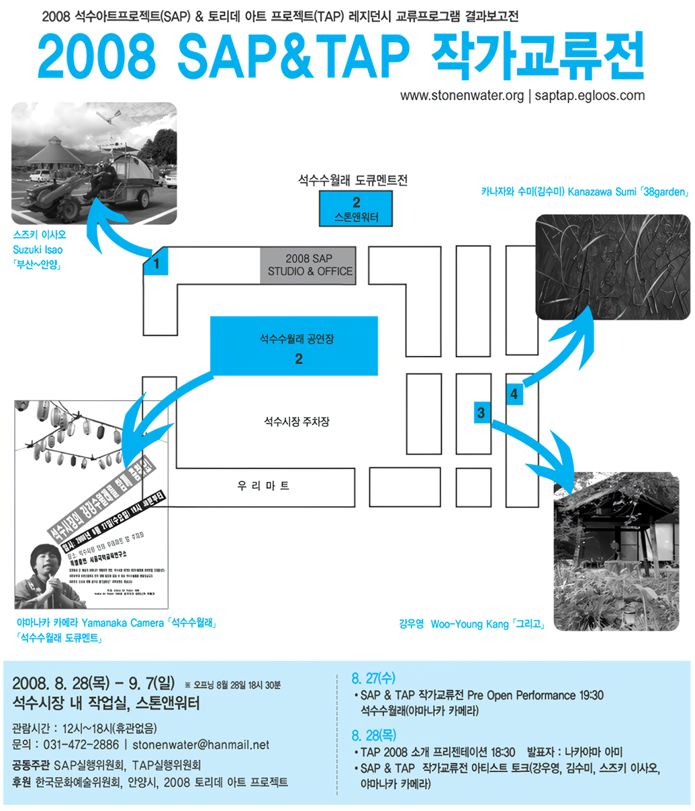
초대일시 / 2008_0828_목요일_0630pm
프리 오픈 퍼포먼스 / 야마나카 카메라의 『석수수월래』
일시 / 2008_0827_수요일_07:30pm
장소 / 석수시장 내 주자창
아티스트 토크 / 발표자_나카아마 아미
일시 / 2008_0828_목요일_06:30pm
장소 / 스톤앤워터 2층
참여작가
스즈키 이사오_카나자와 수미(김수미) 야마나카 카메라_강우영
관람안내 / 12:00pm~06:00pm
보충대리공간 스톤앤워터
SUPPLEMENT SPACE STONE & WATER
경기도 안양시 만안구 석수2동 286-15번지 2층
Tel. +82.(0)31.472.2886
www.stonenwater.org
국가와 국가 간의 교류는 지금 중국에서 올림픽이란 이름으로 뜨겁게 치루어 지고 있다. 유난히 무더웠던 여름! 찜통 같았던 석수시장 슬레이트 지붕 아래에서 더욱 뜨거운 지역 간 교류가 진행되고 있다. 약간의 느슨한 룰과 형식 속에서 자유로운 상상력이 만나서 충돌하고 섞인다. 언어가 충돌하고 낮선 얼굴들끼리 웃음으로 교류한다. 이제 그 짧고 뜨거운 교류, 이름 하여 『2008 SAP&TAP 작가교류』展을 통해 탄생한 새로운 '변태'들이 공개된다.
그 변태의 장본인들은 8월 한 달 동안 뜨거운 땡볕 속에서 작업에 매진해온 이사오, 카메라, 수미 그리고 특별연구원 자격으로 참여한 강우영이다. 이들은 가장 뜨거웠던 여름을 한국에서 보냈다. 부산에서 석수시장까지 자전거 바퀴를 돌려서 발생된 동력으로 동영상을 찍어온 이사오, 슬레이트 지붕 아래 후끈한 찜통더위를 아랑곳없이 하루 10시간씩 꼬박 철사 줄과 씨름을 하는 수미, 멜로디언 한 개로 석수수월래라는 노래를 만드느라 석수 주민 한명 한명을 인터뷰하며 한글을 배우고 춤동작을 배우고 축제를 준비해온 카메라, 특별연구원 자격으로 삽과 탭을 아우르며 작업하고 통역하고 작가들을 지원하고 통신사의 역할까지 일인다역을 맡아온 강우영의 작업까지 우리 앞에 공개된다. 이들이 짧은 시간이지만 뜨겁게 보내며 무엇을 느끼고 무엇을 보여줄 것인지 8월 27일 석수시장에 있는 마당으로 와서 직접 보시라! 이들은 9월 초에 왔던 곳으로 돌아간다. 일본에서 11월에 있을 『TAP 2008(토리데 아트 프로젝트)』에 참여하여 석수시장과 토리데 이노단지를 연결하는 또 다른 작업을 기대하며 이사오, 카메라, 수미, 우영에게 뜨거운 박수를 보낸다.
■ 박찬응
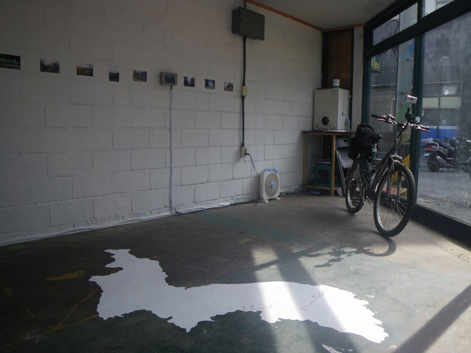
『부산-안양_Busan-Anyang』 ● 스즈키 이사오가 2008년 8월 9일부터 17일까지 9일간, 부산에서 경기도 안양까지, 554.1km의 도정을 자전거로 주파한 체험을 바탕으로 제작된 도큐멘트 작품입니다. 자전거의 전방과 후방에 장치한 카메라를 사용해서 일정시간, 일정거리에서 인터벌 촬영하며 제작된 영상에 더해, 도중 촬영한 사진, 도정을 표시한 지도, 실제로 사용한 자전거들을 함께 전시하여, 여행의 모습을 표현합니다.
■ 스즈키 이사오
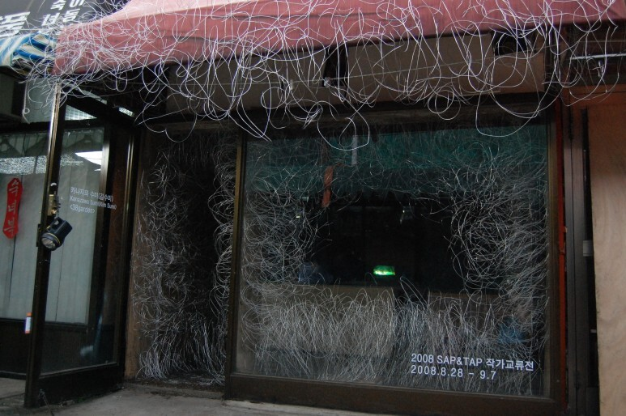
『38garden』 ● 서쪽으로는 횡령도로부터 동쪽으로는 속초 전망대까지, 38선 부근을 여행하며 본 풍경은 비밀스런 자연과 끝없이 계속될 듯한 철조망이었다. 내 관심은 경계선의 맞은편과 경계선을 넘는 행위가 아닌, 인간에 의해 만들어졌으나 인간 사회로부터 닫혀져버린 경계선이 존재하는 공간 그 자체에 향했다. 그 곳에는 현재를 사는 사람들이 잊어가고 있는 과거의 시간들이 숨죽이며 숲과 공존하고 있다. 시간이 축적된 정적에 잠긴 숲은 인간이 만들어 낸 숲, 즉 닫혀진 [정원]이라고도 말할 수 있다. 우리들이 사는 사회에서는 집단 속에서 살아가는 이상, 집단의 룰이나 다양한 집단 사상에 영향 받으며, 때로는 인생이 좌우되기도 한다. 우리들의 사회는 이를테면 그러한 중력에 눌려져 생존하고 있다. 그러나 38도선의 안은 아무 것도 없는 무중력의 공간으로 느껴졌다. 마치 궁극의 개인이 무엇에도 얽매이지 않고 사고할 수 있는 지유로운 공간인 것처럼. 나는 38선의 숲을 석수시장에 재현한다. 단, 이곳은 누구라도 들어올 수 있는 경계선의 숲. 우거진 문자로 뒤덮인 숲에서 당산을 기다리고 있습니다.
■ 카나자와 수미(김수미)
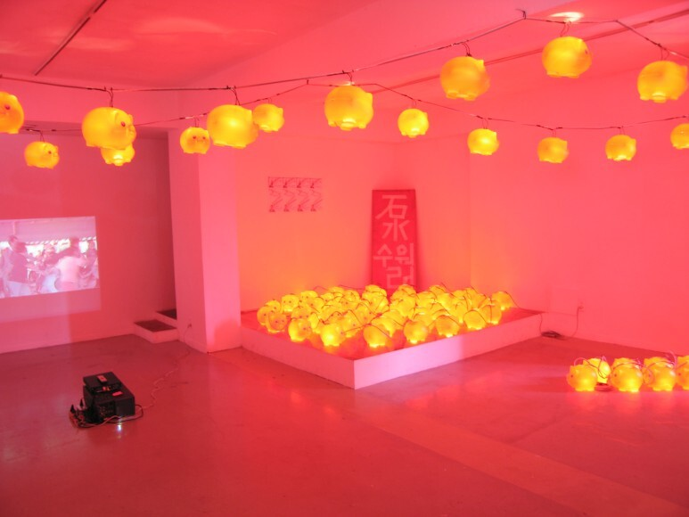
『석수수월래 SEOKSU-SUWOLLAE』 ● 일본에는 둥글게 둘러서서 춤추는 봉오도리(盆踊り)라는 춤이 있습니다. 여름에 지역 주민들이 모여 친목을 나누기 위해 추는 춤입니다. 이 춤은 둥글게 둘러서는 것에 중요한 의미를 두는 데, 그것은 둥글게「輪-wa (circle)」 둘러서는 것이「和-wa (peace · friendship)」를 나타내기 때문입니다. 「Ｃ和」라는 한자에는 「사이좋게 지내다, 서로를 소중히 여기고, 협력하다. 화해하다. 협조」라는 의미 외에도,「무엇에 무엇을 더하다」라는 의미가 있습니다. 석수시장의 아주머니들과 이야기하며 느낀 점이나 한국의 문화와 접하며 감동한 점들을 바탕으로 「석수수월래~석수시장봉오도리 by 야마나카 카메라」를 창작합니다. 야나마카 카메라가 작곡, 작사, 안무한 석수수월래에는 전통국악공연집단인 서울국악교육연구소의 여러분들도 참가하셔서, 전시가 시작되기 전날인 27일 밤 19시 30분부터 약 한 시간 동안, 시장의 여러분들, SAP에 참가 중인 각국의 아티스트들과 같이 둥글게 춤을 춥니다. 저는 한국어도 영어도 잘 못하지만, 예술을 통해 서로 다른 나라의 사람들이 교류하고, 서로의 문화가 믹스된 음악으로 즐겁게 「和」가 되어 춤춘다면, 이 이상 멋진 일은 없다고 생각합니다. 여러분 꼭 함께 즐기러 와 주십시요.
■ 야마나카 카메라
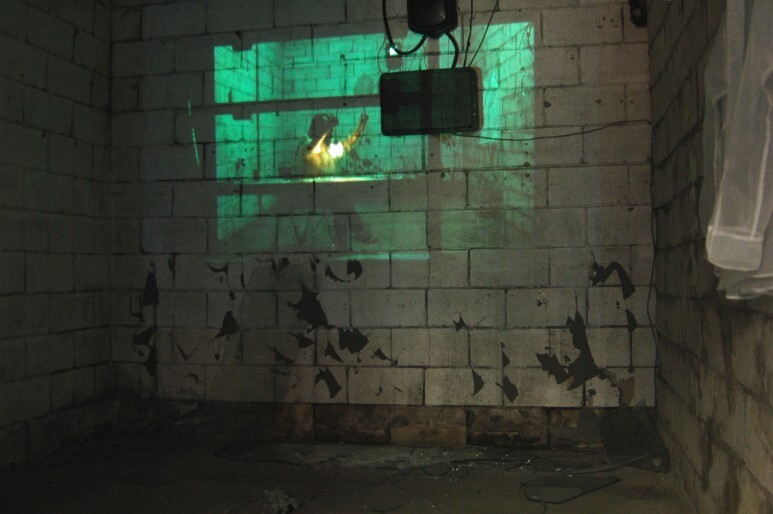
『그리고, and,』 ● 대형마트와 인터넷 쇼핑이라는 기계적이며 정확한 구매 과정과 장소에 익숙했던 나에게, 7월말부터 약 한달간, 모자라고도 넘치는 재래시장에서의 작업과 구매의 기회가 주어졌다. 그 한달간 나는 이 곳에서 하루를 보내는 상인분들과, 손님으로 혹은 같은 주민으로 유연하게 관계하며 이들의 24시간이, 30일이 어떻게 흘러가는지 지켜보았다. 이 작품은 그 관찰과 관계의 시간을 통해 알게된 상인들의 말하지 못했던 이야기들과, 7년 후 혹은 15년 후와 같은 근 미래의 석수 시장에 대한 기대를 바탕으로 만들어졌다.
■ 강우영
2008 SAP + TAP 작가 교류전 오픈 스튜디오
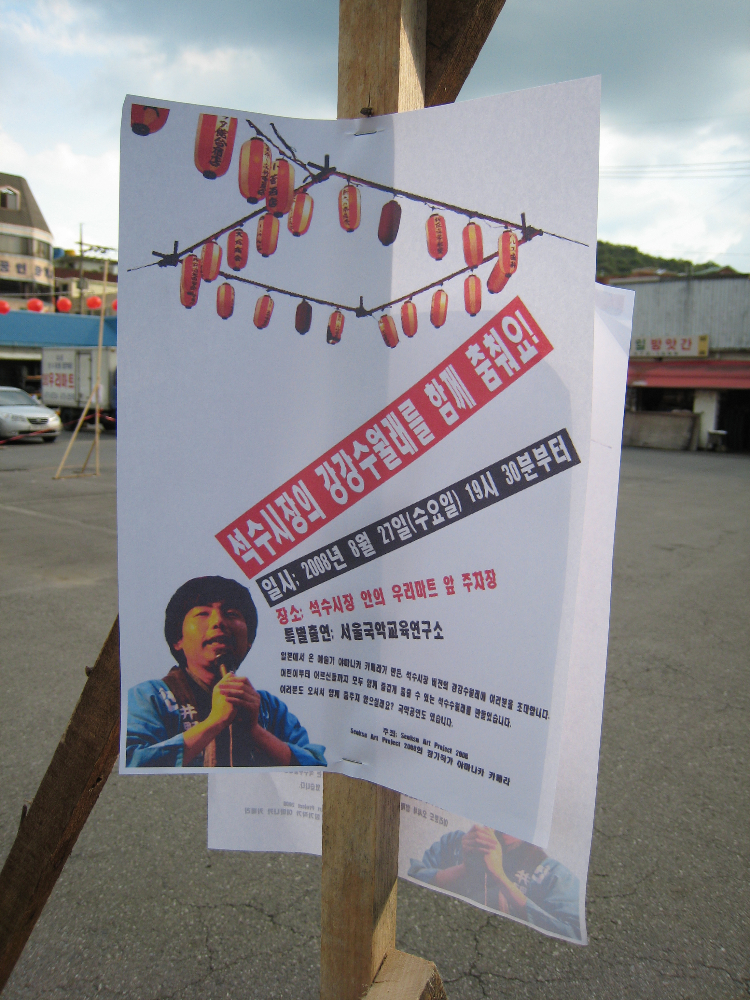 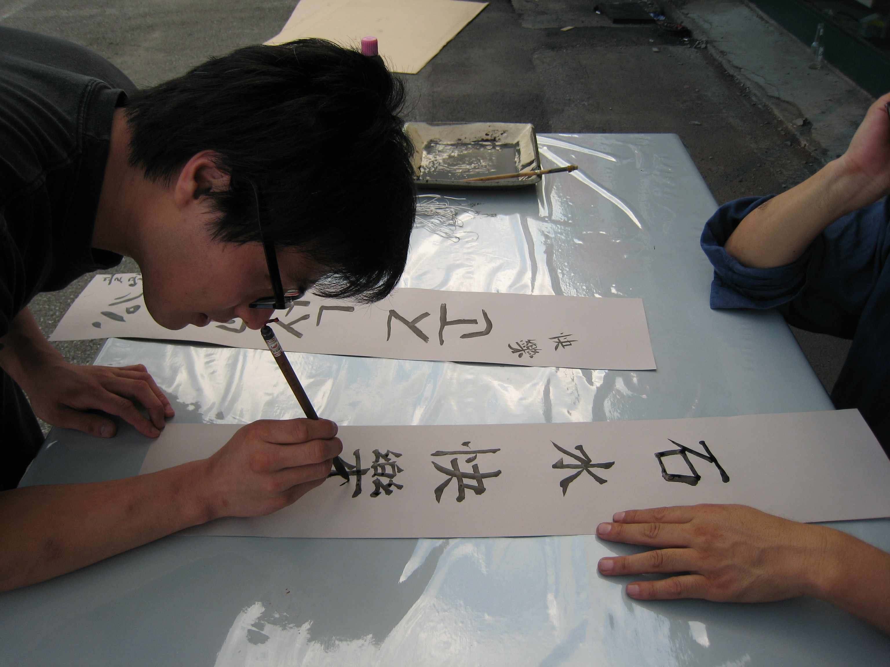 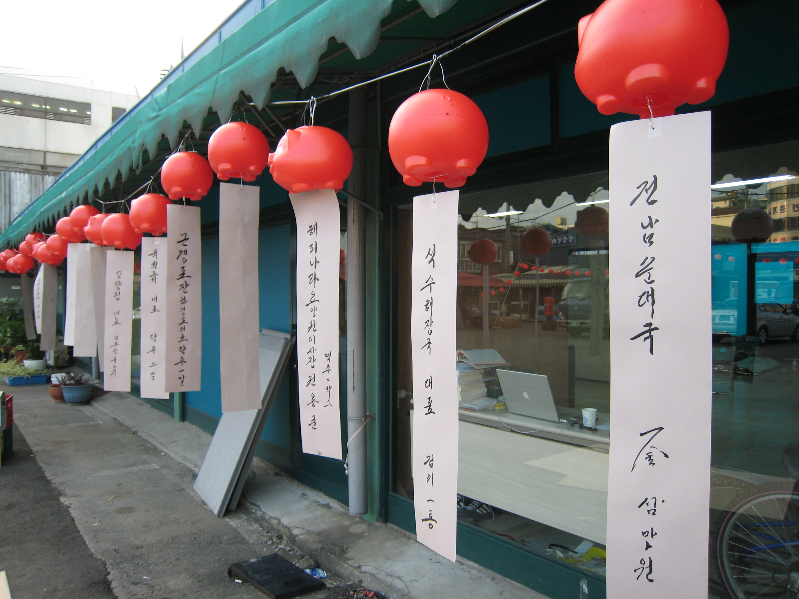 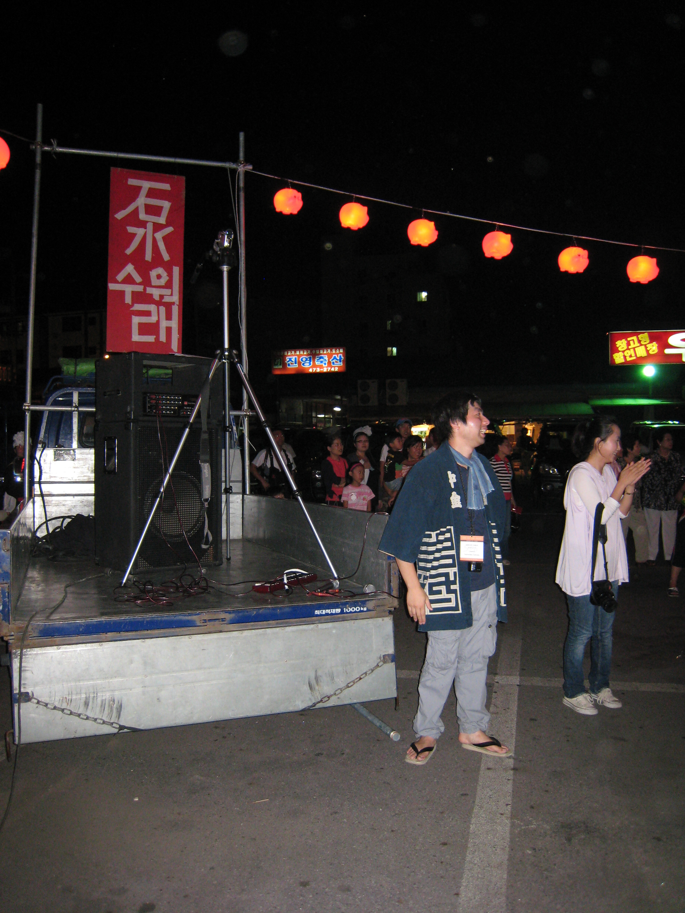 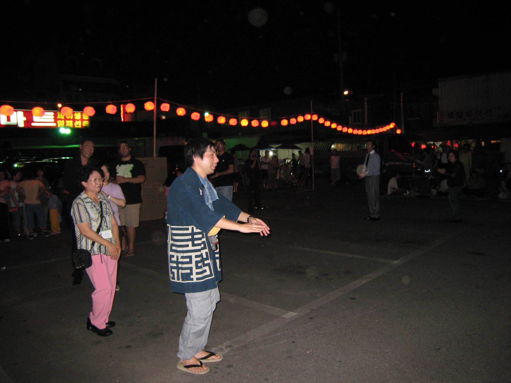 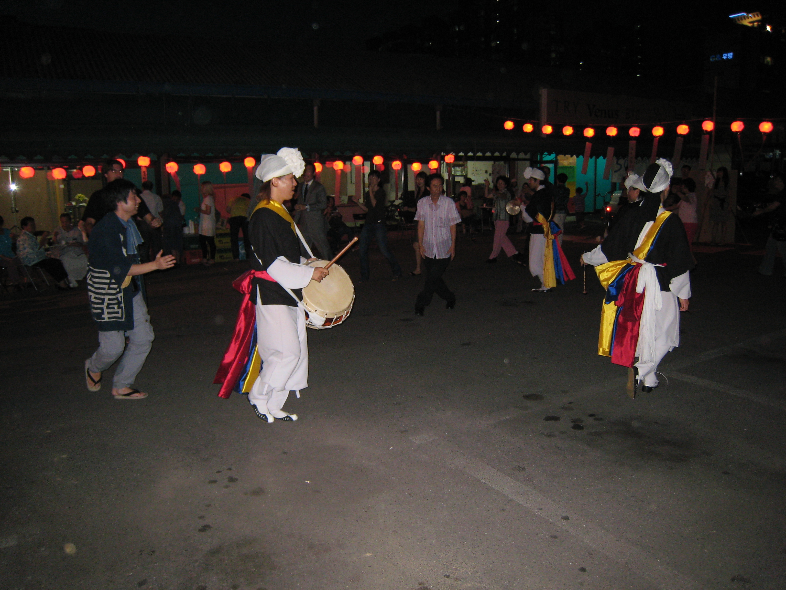 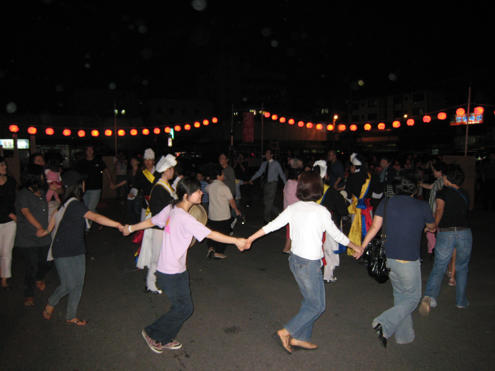 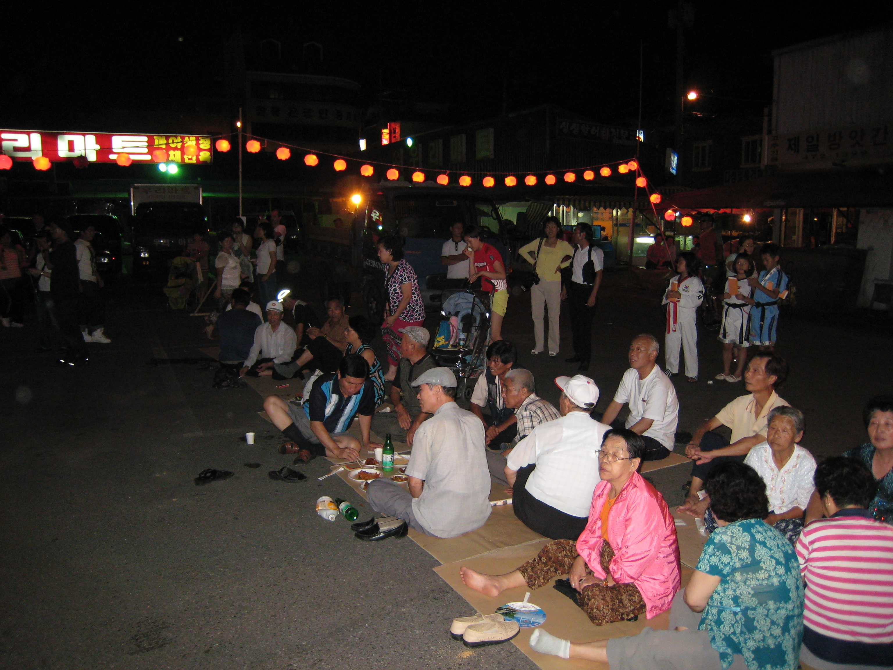 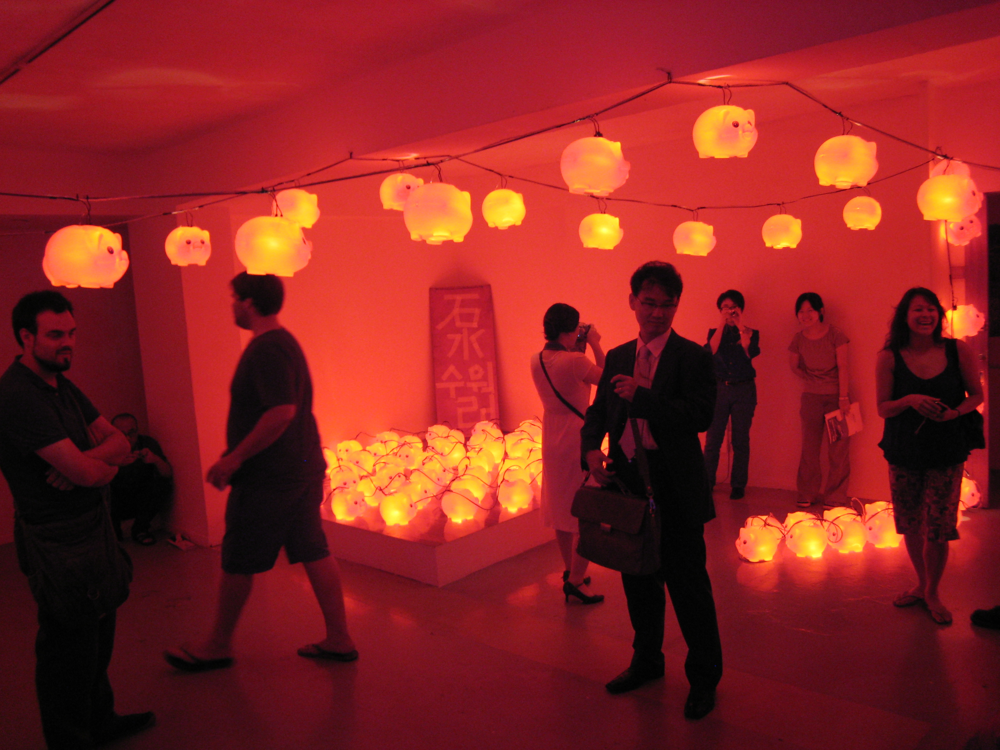 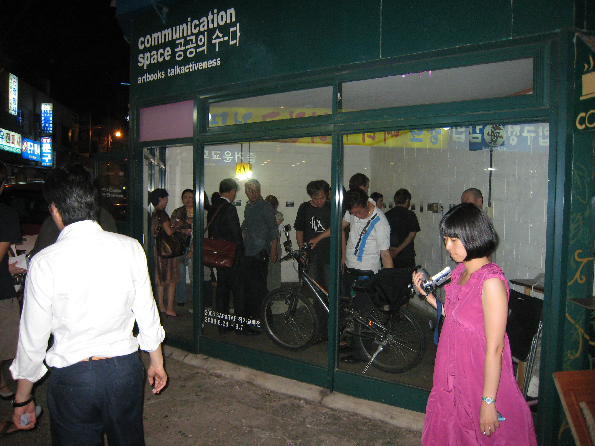 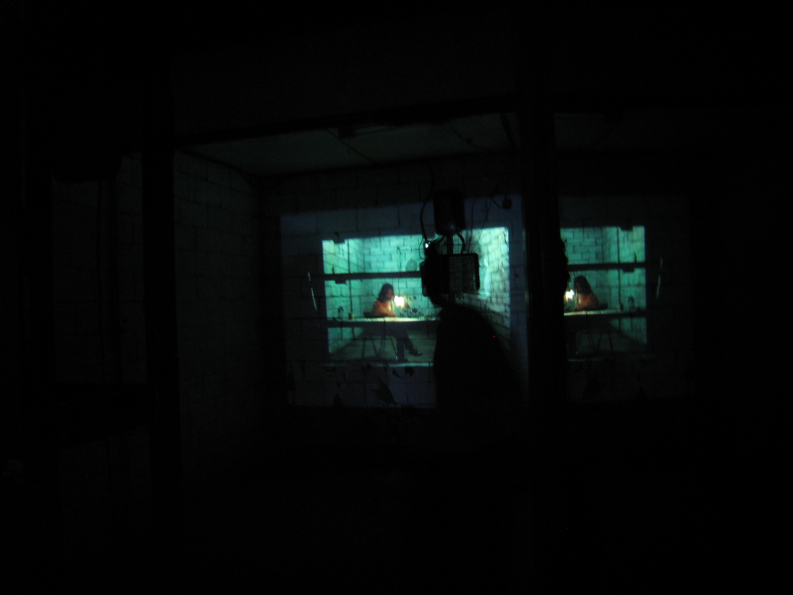